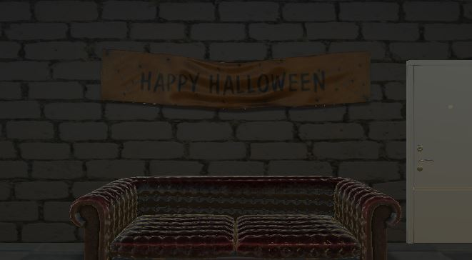
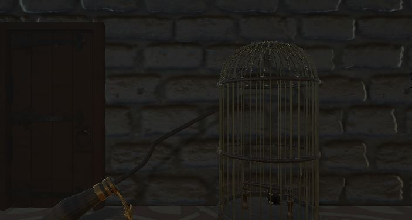

Hint/Answer
- Halloween / ハロウィン
- Level ★★★☆☆
- 
- Witch’s Garden / 魔女の庭
- Level ★★★★☆
- 
ハロウィン / ヒント・カボチャの証言3つのカボチャの中には1つ嘘をついています。「多分、絶対、100％」という言葉は関係ないかもしれません。 ・本とカボチャどのカボチャが何色の本に該当するかどこかに示しているはずです。 ・パスワード正確な本から照らし合わせてください。部屋のどこかに5文字のワードが強調されているかもしれません。 ・小箱パスワード入力後、本棚の小箱が変化しているはずです。また部屋のどこかで何かが変化しています。注意して調べてみましょう。 |
魔女の庭 / ヒント・リンゴ魔女といえばリンゴですが、リンゴといえば...？ ・試験管の数字試験管の数字、本のヒントを頼りに解くと何かが起きます。 ・馬の銅像どこかにヒントが書かれています。 ・鳥籠何かを解くと開くかもしれません。 ・箱魔女の庭なのでどこかに”あれ”があるかもしれません。 |
ハロウィン / 答え・カボチャの証言3つのカボチャが言う「多分、絶対、100％」という言葉は関係なく、Bのカボチャが嘘をついている。 ・本とカボチャどのカボチャが何色の本に該当するのか、テーブルのコップの位置が示している。Aのカボチャは青、Bのカボチャは緑、Cのカボチャは赤。 ・パスワードソファの上の飾り「HAPPY」というワードと正確な本から照らし合わせると、H＝4、A＝2、P＝7、Y＝9で「42779」が答えとなる。 ・小箱パスワード入力後、本棚一番下の小箱が増える。テーブル上のピザの箱から鍵を入手。増えた小箱に使用すると大きいキャンディが手に入る。 ・キャンディパスワード入力後、窓側のカボチャが微笑んでいるのを確認。「微笑んだカボチャは大きいお菓子が好み。」と本に書いてあるため、大きいキャンディを入手後にカボチャをクリックすると綺麗な鍵がもらえる。最後にドアを調べて脱出成功。 ・下から二段目の2つのキャンディ様々なアイテムを使って入手する「キャンディ」「小さなキャンディ」はカボチャの好みではないので、取らなくても脱出できる。 |
魔女の庭 / 答え・リンゴリンゴを取得後、窯を調べるとリンゴを落としてしまうが、脱出に影響はない。 ・試験管の数字
・馬の銅像馬の向きを見る。初期は右左左右左、8桁のパスワード入力後、真ん中の馬の向きが変わるため右左右右左となる。 ・鳥籠銅像の謎を解くと鳥籠が開く。中から箱が出てくる。 ・箱机の上の杖を使って箱を壊すと綺麗な鍵がでてくる。最後にドアを調べて脱出成功。 |